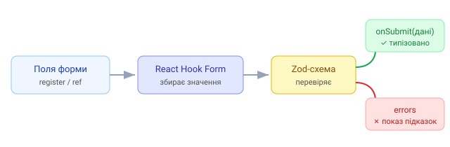

1. Проблема «ручних» форм
У розділі React ми робили контрольовані форми: кожне поле — useState +
onChange. На великій формі це багато коду, а ще й кожне натискання клавіші
перемальовує весь компонент.
// по стану на кожне поле — і ре-рендер на кожен символ
const [email, setEmail] = useState('');
const [password, setPassword] = useState('');
const [name, setName] = useState('');
// ...валідація, помилки, submit — усе вручну2. Що таке React Hook Form
React Hook Form (RHF) — бібліотека для роботи з формами, яка спирається на
неконтрольовані поля (через ref). Вона збирає значення без зайвих
ре-рендерів, а валідацію, помилки й сабміт бере на себе.
Ключова перевага — продуктивність: набір тексту в полі не перемальовує всю форму, бо RHF не тримає кожне значення в стані React. На великих формах це відчутно швидше за підхід «useState на кожне поле».
3. Що дає з коробки
- мінімум коду — поля реєструють одним викликом;
- вбудована й схемна (Zod) валідація;
- зручний доступ до помилок і станів (
isSubmitting,isValid); - менше ре-рендерів — краща продуктивність.
4. І до чого тут Zod
RHF відповідає за механіку форми, а Zod — за правила валідації (схему даних). Разом вони дають типобезпечні форми: одна схема описує і перевірку, і TypeScript-тип даних. Далі в розділі складемо цей конвеєр по кроках.

5. Встановлення
npm install react-hook-form